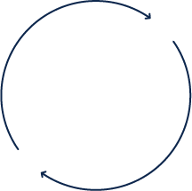
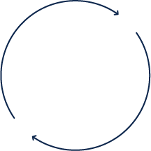

Thinking AMD? Choose Cisco UCS
Elevate workloads to new heights with Cisco UCS® rack servers featuring AMD EPYC™ processors
Applications are the heartbeat of businesses
They are the heart that drives complex, distributed, multidomain enterprise data centers around the world
Ideal for workloads that are currently starved for more CPU cores or frequency
- Virtual desktop infrastructure
- Data management and analytics
- Virtualized and hybrid-cloud applications
- On-line gaming
- Technical computing
- Machine learning and AI
Benefits include
- Excellent performance
- High compute density
- More cores per server
- Sophisticated security features
- Better economics
- Unified management
You can have it all with UCS® rack servers powered by AMD EPYC™ processors
- Accelerate your modern workloads faster than ever
- Drive applications that usually require 2 CPUs with a single socket 64-Core AMD processor
- Easily deploy powerful AMD features like Secure Memory Encryption (SME) or Secure Encrypted Virtualization (SEV) to your servers leveraging the power of Intersight™
- Simplified management of your power AMD servers at global scale
Cisco AMD EPYC™ Rack Server
Cisco UCS C225 M6 Rack Servers
A 1-Socket Optimized, 2S capable server that drives a portfolio of drive options and I/O capacity regardless if the server is populated by 1 or 2 EPYC™ CPUs, helping to save on capital and operational costs
Cisco UCS C245 M6 Rack Server
A 2-socket, 2RU server with vast storage and I/O capacity and options
Cisco UCS C4200 M5 Rack Server
This multinode server hosts 4 x 2-Socket AMD compute nodes in a 2RU chassis to meet high-density compute needs
Why Cisco UCS® with AMD EPYC™ processors
Choose Cisco UCS® and AMD EPYC™ processors to propel your workloads
Supercharge your applications
- World Record setting servers drive ultimate performance
- Core sensitive workloads thrive with these high-core count AMD CPUs giving up to 64 Cores in a 1S configuration or up to 128 cores in a 2S configuration
Streamline your infrastructure
- All Cisco UCS® servers, regardless if it’s a blade, rack, UCS® server in a Converged Infrastructure solution or Hyperflex, all integrate into a single point of management
- AMD CPU features can be easily enabled and deployed in Intersight™ enabling consistency and accuracy on a global scale
Simplify with cloud-operated infrastructure
- Intelligent visualization, optimization and orchestration to all of your applications and infrastructure
- Cloud based Cisco Intersight™ management of your Cisco UCS® servers with AMD EPYC™ processors
 

AMD EPYC™ advantages
Unlock your potential with Cisco UCS® servers powered by AMD EPYC™ processors
Compute density
With AMD CPUs providing up to 64 cores, easily deploy up to 128 cores in a server to propel sluggish workloads, save on space and lowering your power and cooling costs
High performance
Delivered by world record setting AMD EPYC™ processors and the powerful, innovative Cisco Unified Computing Systems architecture
Security features
Secure your virtualized environments with virtual machines encrypted in main memory that can only be delivered with these powerful EPYC™ processors
High-frequency options
Drive frequency based applications that are clock speed sensitive to get better overall performance and lower licensing costs
Large cache sizes
Technical computing workloads are dependent on large amounts of cache and the AMD 3D V-Cache CPU technology propels these workloads by giving them access to as much as 768MB of Level 3 cache per CPU

Better together
When you choose Cisco UCS® servers powered by AMD EPYC™ processors, you unleash the value of EPYC™ processors with the benefits of a single unified system managed from the cloud
© 2022 Cisco and/or its affiliates. All rights reserved.